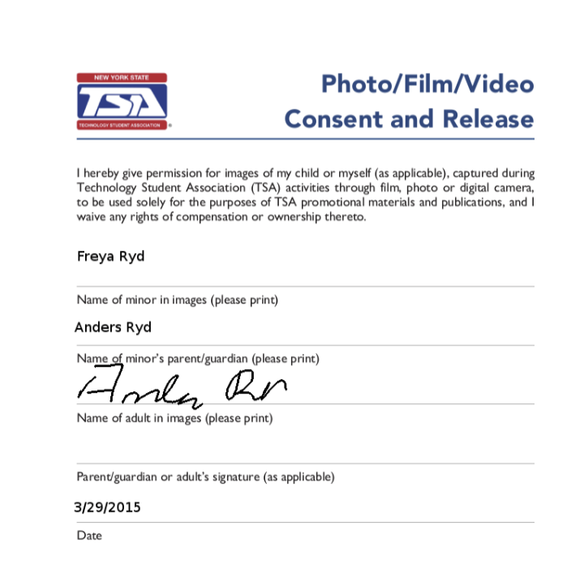
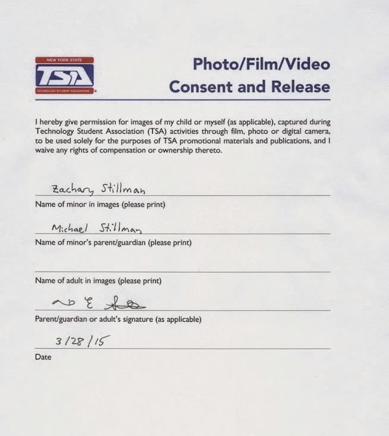
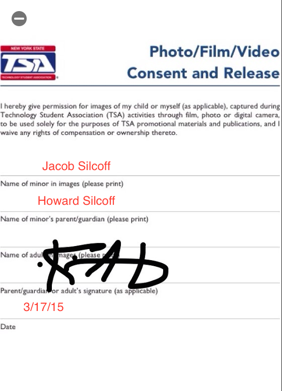
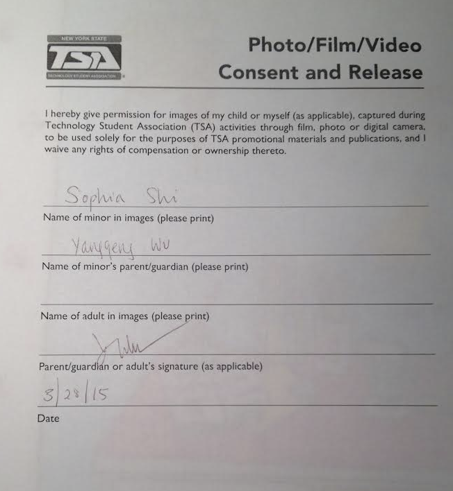
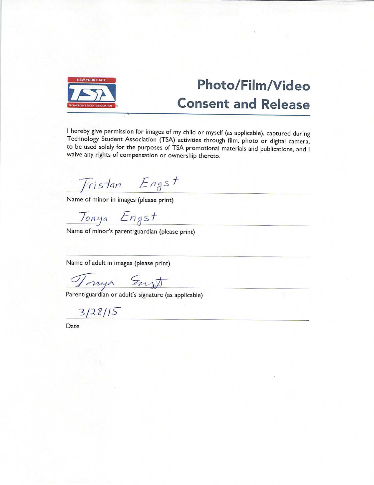

Students in the Ithaca High School Technology Student Association chapter aspire to be leaders in the increasingly technological world. Learn more
Fundraising to go to and preparing for state and national competitions. Learn more
We have great leadership. Learn more
Ithaca High School uses a modified—secular and shorter—version of the TSA creed. Our motto is also slightly different from National TSA’s, better reflecting technology’s part in TSA.
Motto: Learning to live in a technological world.
Creed: I believe that Technology Education holds an important place in my life in the technical world. I believe there is a need for the development of good attitudes concerning work, tools, materials, experimentation, and processes of industry. Guided by my teachers, members of the industry, and my own initiative, I will strive to make my world a better place in which to live. I will accept the responsibilities that are mine, and theories that are supported by proper evidence. I will explore safer and more effective methods of working and living, and express my ideas to the best of my ability. I will make it my goal to do better each day the task before me.
With many students to poor to easily spend roughly $1,000 going to the TSA National Competition, fundraising is a big part of being in IHSTSA. We fundraise by selling chocolate bars and crowdfunding.
Ithaca High School TSA has historically had great success selling Gertrude Hawk chocolate bars in school. Even this year’s ban on selling chocolate has in school hasn’t deterred us from selling the chocolates immediately after school ends, and profits have remained high.
Since 2014, Ithaca High School has used crowdfunding as a way to help send themselves to the TSA National Conference. Last year, $5,146 was raised by crowdfunding, using the local PEAKS crowdfunding platform. The campaign was the result of a partnership between Ithaca High School TSA and IthacaSTEM, a non-profit organization that helps Ithaca High School and TSA and other local technology clubs - such as Code Red Robotics (FIRST Team 639) and the Ithaca High School Science Olympiad. The highlight of the campaign was a video made by Sophia Shi, then Ithaca High School TSA’s vice-president. This year, a similar project is under way.
IHSTSA's leadership team is composed of five student officers. Learn more
 Zak Stillman is Ithaca High School TSA's President. His two favorite events are CO2 Dragster and Video Game Design, in which his team took 7th place at the 2014 TSA National Conference. He is also a national three-time finalist in System Control Technology. He’s also a national finalist in Techno-Talk. When he’s not preparing events in TSA or coordinating chapter activities, Zak is a diligent student and a member of Ithaca High School Code Red Robotics (FIRST Team 639) and Ithaca High School’s Debate Team.
Zak Stillman is Ithaca High School TSA's President. His two favorite events are CO2 Dragster and Video Game Design, in which his team took 7th place at the 2014 TSA National Conference. He is also a national three-time finalist in System Control Technology. He’s also a national finalist in Techno-Talk. When he’s not preparing events in TSA or coordinating chapter activities, Zak is a diligent student and a member of Ithaca High School Code Red Robotics (FIRST Team 639) and Ithaca High School’s Debate Team.
 Jacob Silcoff is Ithaca High School TSA's Vice-President, with Video Game Design and Catapult, an event specific to New York State TSA. At TSA Nationals, Jacob has won in Technology Bowl, System Control (with Zak), and Video Game Design (with Zak). Outside of TSA, Jacob is a talented student, snowboarder, and the Ithaca High School Debate Team’s captain.
Jacob Silcoff is Ithaca High School TSA's Vice-President, with Video Game Design and Catapult, an event specific to New York State TSA. At TSA Nationals, Jacob has won in Technology Bowl, System Control (with Zak), and Video Game Design (with Zak). Outside of TSA, Jacob is a talented student, snowboarder, and the Ithaca High School Debate Team’s captain.
Freya Ryd is Ithaca High School TSA's Secretary. Her favorite events are Video Game Design and Photographic Technology (although she misses Techno-Talk from middle school, in which she was a two-time national finalist). Freya was also part of Zak and Jacob’s winning Video Game Design Team. Outside of TSA, Freya enjoys horseback riding and plays the violin.
 Tristan Engst is Ithaca High School TSA's Reporter. His favorite events are Webmaster and Video Game Design (he was part of Jacob, Zak, and Freya’s winning team). At Nationals, he’s also won in Technology Bowl (with Jacob). Outside of TSA, Tristan is an illustrious student and a varsity Cross Country runner.
Tristan Engst is Ithaca High School TSA's Reporter. His favorite events are Webmaster and Video Game Design (he was part of Jacob, Zak, and Freya’s winning team). At Nationals, he’s also won in Technology Bowl (with Jacob). Outside of TSA, Tristan is an illustrious student and a varsity Cross Country runner.
 Sophia Shi is Ithaca High School TSA's Sergeant-at-Arms, as well as New York State TSA's president. Sophia is the oldest and by far the most experienced member of the officer team, making her an invaluable asset to a young officer team which is relatively inexperienced.
Sophia Shi is Ithaca High School TSA's Sergeant-at-Arms, as well as New York State TSA's president. Sophia is the oldest and by far the most experienced member of the officer team, making her an invaluable asset to a young officer team which is relatively inexperienced.
Permissions:,br>





Bibliography
Engst, Tristan. "Being an Officer." Interview. 9 Mar. 2015. Email.
Engst, Tristan. "Fundraising." Interview. 18 Mar. 2015. Email.
Ryd, Sophia. "Being an Officer." Interview. 9 Mar. 2015. Email.
Shi, Sophia. "Being an Officer." Interview. 9 Mar. 2015. Email.
Silcoff, Jacob. "Being an Officer." Interview. 9 Mar. 2015. Email.
Stillman, Zak. "Being an Officer." Interview. 9 Mar. 2015. Email.